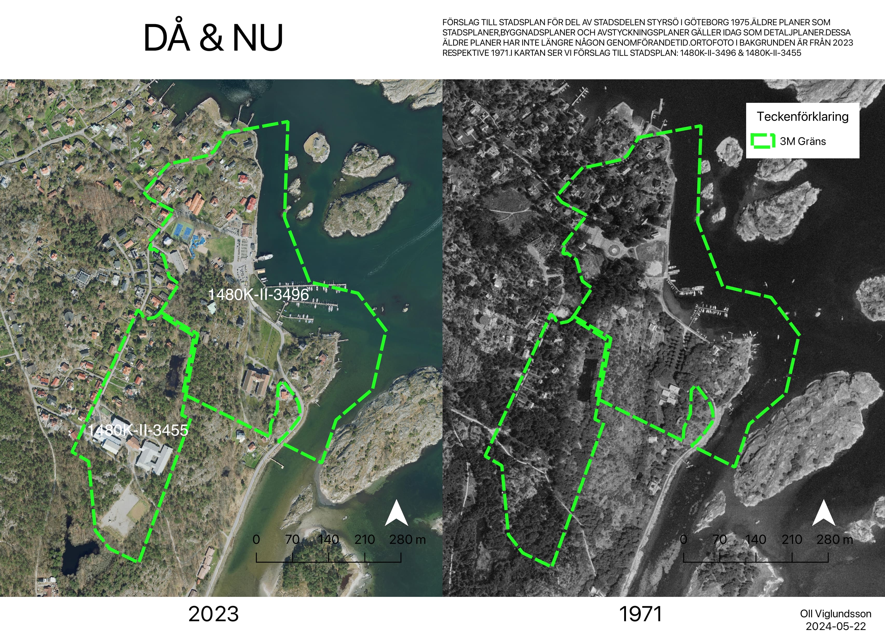

Digitizing detailed development plans
Project Details / Background
This project involved two old detailed development plans from 1975 and 1977 from Styrsö, the main island in the Gothenburg archipelago. The workflow involved aligning them with modern geographical data through georeferencing, and digitizing its features to create usable GIS layers. This process allows for better analysis, planning, and visualization of historical and current land use and planning regulations in the area.
The government has decided that information in new detailed development plans must be made accessible and processed digitally starting January 1, 2022. From this date, all new detailed development plans must be created according to the Swedish National Board of Housing, Building and Planning's (Boverket) regulations (2020:5) on detailed plans.
1971 vs 2023
Here a combined historical and current map of Styrsö, an island in the Gothenburg archipelago, showing changes over time. The green dashed lines marks a three meter buffer from both detailed development plans

Orthofoto from 2023 and 1971, provided with open data from Lantmäteriet (The Land Survey) and the municipality of Gothenburg
Georeferencing
All legally binding detailed development plans in the municipality of Gothenburg is available to the public through their website.
 Here we see both detailed development plans georeferenced and overlaid with coordinates. Opacity is 50%
Here we see both detailed development plans georeferenced and overlaid with coordinates. Opacity is 50%
×

Digitizing
This step is made in order to convert features from the old analog map into digital formats. This is done manually in Qgis with the digitizing tool, snapping enabled of course.
This layer details the current land use based on the digitized plan. It includes information on residential areas, commercial zones, green spaces, etc.
Planning provisions
Following is a document that provides further details of the plans provisions.
Summary
This was a fun excercise, the build up into creating and digitizing these maps involved alot of theory about urban planning and rural planning in Sweden, how to approach and plan for the use of land and water based on laws and regulations. To compare the differences in both quality of aerial images and how the area was supposed to be developed was so interesting. This is something im eager to learn more about and would absolutely want to work with in the future.